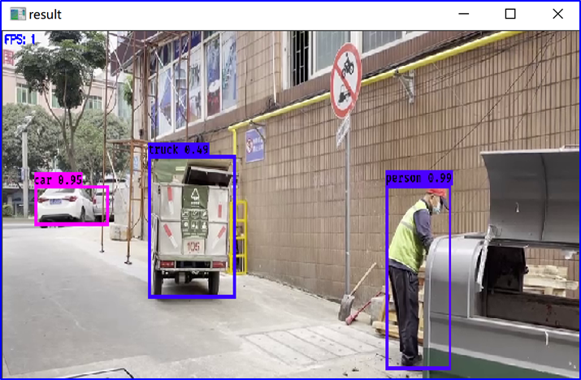
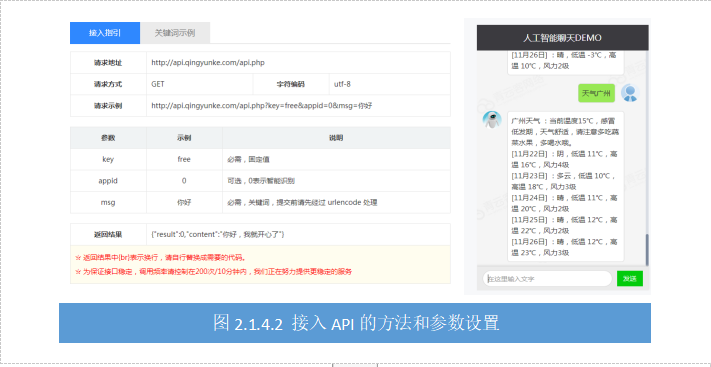

任务2.1.4 聊天机器人#
任务描述#
聊天机器人以自然语言处理为主，自然语言处理在聊天机器人中的作用是对输入的语句进行分析，提取出实体、意图等关键信息。自然语言处理同样是一个需要大量算力的算法，我们可以通过图灵、百度等API实现。这里，我们使用YunGe API编写一个对话机器人。
学习目标#
1.知识目标
（1）掌握调用API设计聊天机器人的方法；
（2）理解API参数列表的含义。
2.能力目标
（1）能传递正确的参数；
（2）能根据需要获取所需要的数据。
3.素质素养目标
（1）培养学生关注产品质量的职业素养；
（2）培养用词文明意识；
（3）培养遵守规范的意识；
（4）培养热爱劳动的意识。
知识链接#
一、聊天机器人
聊天机器人是通过口头人类语音或书面文字进行交谈的计算机程序。聊天机器人很有实用价值而且成本低又能高效持续工作，通常用来解决客户问题的智能数字化助手，如客户服务或资讯获取。有些聊天机器人会搭载自然语言处理系统，但很多简单的系统是通过提取输入的关键字然后从数据库中找寻最合适的应答来完成交流聊天的。工业界和学术界都十分关注聊天系统的研发，主要原因在于，一方面，聊天技术应用能够极大地缩减人力资源；另一方面，聊天技术代表了自然语言处理的最高水平之一，是许多科学家向往突破的难题。根据聊天系统目的及功能的不同，可分成三大类型：闲聊式机器人，较有代表性的有微软小冰、微软小娜、苹果的Siri、小i机器人等，主要用于娱乐；知识问答型机器人，比如watson 系统最早在2011年的问答节目Jeopardy上击败了所有人类选手，赢得百万美元奖金；任务型聊天机器人，以完成某一领域的具体任务为导向，在工业界应用较广泛，如订票系统、订餐系统等。聊天机器人目前在电商平台有最广泛的应用，最常用于客户服务领域，例如京东客服JIMI、阿里云小蜜等。很多基本的问题不需要联系人工客服来结局，通过智能客服可以排除大量的用户问题，比如商品质量投诉、商品的基本信查询、快递邮费问题等程序化或固定答案的问题，一些询问率比较高的问题机器人能准确高效的回复而且24小时在线，不仅提升服务质量还能节省大量的人工成本。
2014年，我国首个人工智能公司北京光年无限科技有限公司推出了图灵机器人，是中文语境下智能度较高的机器人大脑，具有全球领先的中文语义与认知计算平台。图灵机器人对中文语义的理解准确率高达90%，可为智能化软硬件产品提供中文语义分析、自然语言对话、深度问答等人工智能技术服务。图灵机器人根据应用场景可以分为智能客服、虚拟机器人、智能手表、智能车载和智能家居几类。其中虚拟机器人可接入微信、QQ等平台，搭建聊天机器人，与用户流畅交流。图灵机器人提供自然的中文对话能力，精准的中文语义分析能力，准确判断用户意图，同时还具有丰富的上下文场景及强大的自我学习能力。
除了应用于电商领域的智能客服机器人，还有很多应用于医疗、家庭生活、刑侦等领域的机器人。
1.Endurance：痴呆症患者的伴侣
许多患有阿尔茨海默病的人都会伴有短期记忆丧失，即时是简单的对话互动，对他们也非常困难—很难进行有意义的对话，但是他们聊天交流的能力和需求和正常人一样，这就造成了这些阿尔茨海默患者即时跟亲密的家人朋友进行日常交流经常因为前言不搭后语而感到非常沮丧和自卑。因此俄罗斯科技公司Endurance开发了伴侣聊天机器人，通过机器人采集聊天记录，医生和家人可以通过患者与机器人的聊天记录来判断患者识别记忆功能的潜在退化和患者病情恶化的交流障碍。Endurance可以帮助研究人员和护理团队更好地了解阿尔茨海默病如何影响大脑。目前俄罗斯版本的Endurance聊天机器人已经上市。
2.Casper：帮助失眠者度过漫漫长夜
这个世界上其他人都安静地休息，而失眠患者却辗转反侧无法入眠的那种痛苦，如果你也患有失眠症，一定知道这是一种几乎令人窒息的孤独感。Casper是一个旨在让失眠者与其他人交谈的网络聊天机器人，驱散失眠者的孤独，陪伴其渡过漫漫长夜。
3.Disney：用虚构人物解决犯罪问题
迪士尼使用聊天机器人扮演2016年动画家庭犯罪案件Zootopia的角色，邀请这部电影的粉丝与中尉朱迪霍普斯（Judy Hopps）一起解决犯罪问题。朱迪霍普斯是这部电影的顽强、长耳的主角。粉丝们可以通过与机器人交互来帮助Lt.Hopps调查电影中的谜团，在交谈中为Lt.Hopps的调查提出建议，聊天机器人对此做出回应并探究解谜。
4.联合国儿童基金会：帮助边缘化社区
国际儿童倡导非营利组织联合国儿童基金会开发了一个名叫U-Report聊天机器人，通过社区调查社会问题帮助生活在发展中国家人民。这款机器人专注于通过民意调查收集大规模数据，定期发布针对一系列紧急社会问题的民意调查，用户（即“U-Reporters”）可以回复他们的意见。然后，儿童基金会将这一反馈作为潜在政策建议的基础。U-Report曾向利比里亚的用户发送了一份民意调查，说明教师是否强迫学生进行性行为以换取更好的成绩。在接受调查的13,000名利比里亚儿童U-Report中，大约86％的人回答说，他们的教师正在从事这种卑鄙的做法，因此联合国儿童基金会立即决定结束与利比里亚教育部长之间的合作项目。
二、聊天机器人API
聊天机器人应用越来越普遍，主要原因是创建聊天机器人的技术门槛越来越低，开发者不需要掌握复杂的编程知识和其他高度专业化的技术技能就可以快速地开发一个聊天机器人。很多公司提供了开放的聊天机器人API接口供开发者使用。
1.图灵机器人API
图灵机器人具有智能对话、知识库、技能服务三种核心功能，它能准确地对中文语义进行理解，人们可以借助图灵机器人API接口，根据自己的需要创建聊天机器人，客服机器人，领域对话问答机器人，儿童陪伴机器人等在线服务，给人们的生活、工作、客户咨询和售后服务带来便利。图灵机器人提供了自动解析文字的API接口。创建一个机器人，就可以得到一个Key值，作为访问API的身份标识。图灵机器人官网: http://www.tuling123.com/。 图灵机器人提供了开放的API接口供开发者使用，但需要注册账号才能使用。提供了免费版和标准版，个人认证之后每天可以免费使用 100 条，但只有一些基本的语料库，可设置的选项也不多，标准版99元/月，可以自定义语料库，可设置的选项也更多。图灵机器人开放API接入文档参考官方网站的参数和方法:http://docs.turingos.cn/api/apiV2/。

2.青云客API
青云客提供了聊天机器人的调用接口，并提供了 API 文档，目前不需要注册，完全免费，官方网址为:http://api.qingyunke.com/。接入API的方法和参数设置如图2.1.4.2左侧所示。官网提供了聊天机器人DEMO，可以闲聊、问天气、查歌词、搜笑话等，图2.1.4.2右侧是问天气的示例

3.腾讯闲聊机器人
腾讯闲聊服务基于AI Lab领先的NLP引擎能力、数据运算能力和千亿级互联网语料数据的支持，同时集成了广泛的知识问答能力，可实现上百种自定义属性配置，以及男、女不同的语言风格及说话方式，从而让聊天变得更睿智、简单和有趣。腾讯闲聊机器人API需要注册和申请，还需要加密处理。
三、使用API开发聊天机器人#
这里我们使用广州云歌科技有限公司提供的聊天机器人API完成开发简易聊天机器人。其中用到的地址url=’https:Lltestapi.smartyg.com/apilpost gossip’和keys=’5f15a18f3f03f7e88020acblc2f8c93c’。下面是完整的开发流程和相关参数的解释。
步骤1: 导入requests、json、time和random依赖库，参考代码。
import requests
import json
import time
import random
步骤2 利用random函数和time方法创建一个随机字符串，用来区分每一次对话的对象。
random_str = str(time.time()+random.randint(0,100))
print(random_str)
步骤3 定义一个函数xiaoxin，调用Yunge API，发送text，获得回复.
def xiaoxin(text):
res = ''
url = "https://testapi.smartyg.com/api/post_gossip"
keys = "5f15a18f3f03f7e88020acb1c2f8c93c"
result = requests.post(url, json.dumps(
{"keys": keys,
"question": text ,
"id":"1",
"random_str":randomstr,"state":True})).text
data = json.loads(result)
if data["flag"] == "success":
res = data["answay"]
return res
requests中的参数含义如下：
参数 |
含义 |
|---|---|
keys |
请求的keys |
question |
传输的语句 |
id |
默认是1 |
random_str |
随机字符串（时间+随机数的组合） |
state |
默认true |
步骤4 调用xiaoxin，创建闲聊机器人，为了不间断聊天，我们循环输入问题并调用xiaoxin，参考代码。
while True:
question = input('我：')
answay = xiaoxing(question)
print('robot:'answay)
本次任务通过调用Yunge API创建聊天机器人的完整参考代码:
import requests
import json
import time
import random
random_str = str(time.time()+random.randint(0,100))
print(random_str)
def xiaoxin(text):
res = ''
url = "https://testapi.smartyg.com/api/post_gossip"
keys = "5f15a18f3f03f7e88020acb1c2f8c93c"
result = requests.post(url, json.dumps(
{"keys": keys,
"question": text ,
"id":"1",
"random_str":randomstr,"state":True})).text
data = json.loads(result)
if data["flag"] == "success":
res = data["answay"]
return res
while True:
question = input('我：')
answay = xiaoxing(question)
print('robot:'answay)
素质素养养成#
（1）在总结聊天机器人的应用中了解聊天机器人节省人工、帮助痴呆失眠患者、帮助发展中国家等培养学生技术服务人类的意识；
（2）通过API调用的基本流程和参数设置培养学生遵守规则和流程的职业素养；
（3）在调用百度api要设置合适的参数才能出现满意的语音合成效果中培养遵守规范的意识；
（4）通过图灵机器人在中文聊天机器人中文语境中的领先优势，树立学生国家意识和民族归属；
（5）通过实验记录和统计准确率引导学生关注产品质量和开发效率，提升职业素养。
任务实施#
任务工作单1：认知聊天机器人#
组号：__________ 姓名：__________ 学号：__________ 检索号：__________
引导问题：#
（1）什么叫聊天机器人？
—————————————————————————————————————————————————————————
（2）聊天机器人按照功能可以分为哪几类？每个类别请至少列举一个典型代表及其应用情况。
—————————————————————————————————————————————————————————
（3）你觉得聊天机器人有哪些应用价值？结合具体的应用案例说明。
—————————————————————————————————————————————————————————
（4）将以上三个回答制作成展示汇报PPT。
—————————————————————————————————————————————————————————
任务工作单2：认知聊天机器人api#
组号：__________ 姓名：__________ 学号：__________ 检索号：__________
引导问题：#
（1）请列举3个以上为开发者提供聊天机器人api接口的平台名称和网址。
—————————————————————————————————————————————————————————
（2）写出任一个开放的聊天机器人api接口调用的地址、请求方法、编码方式、请求参数说明。
—————————————————————————————————————————————————————————
任务工作单3：聊天机器人api调用实践#
组号：__________ 姓名：__________ 学号：__________ 检索号：__________
引导问题：#
（1）YunGe聊天机器人API的url和key分别是什么？
—————————————————————————————————————————————————————————
（2）定义一个函数，通过参数输入问题（question），调用YunGe聊天机器人API，返回与问题对应的回答(answer)。提交代码和至少三次问答的测试截图。
—————————————————————————————————————————————————————————
任务工作单4：聊天机器人认知和应用（展示）#
组号：__________ 姓名：__________ 学号：__________ 检索号：__________
引导问题：#
（1）每小组推荐一位小组长，展示汇报聊天机器人和聊天机器api的总结，互相分享学习成果。展示汇报调用YunGe聊天机器人开发流程和经验总结。
—————————————————————————————————————————————————————————
（2）查漏补缺，检查自己不足的地方。
—————————————————————————————————————————————————————————
任务工作单5：聊天机器人开发实践#
组号：__________ 姓名：__________ 学号：__________ 检索号：__________
引导问题：#
（1）使用Python按照正确的流程和方法，调用API创建一个聊天机器人。
—————————————————————————————————————————————————————————
（2）调试聊天机器人，和机器人对话20次以上，记录问题和回答，计算一下机器人的正确率，分析误差的原因。
—————————————————————————————————————————————————————————
（3）拓展：试试将聊天机器人文字输入升级为语音输入。
————————————————————————————————————————————————————————— （4）拓展：试试将聊天机器人的回答升级为语音回答。
—————————————————————————————————————————————————————————